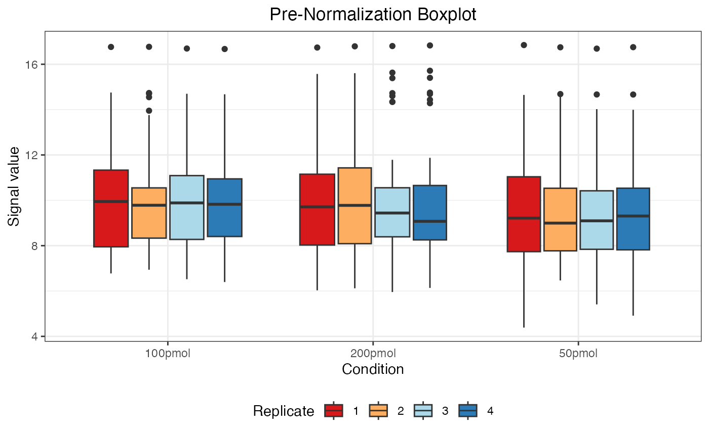
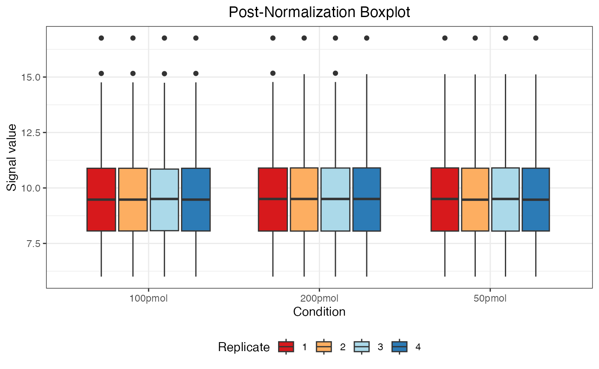

Normalization
Shiying Xiao, Charles Watt, Jennifer C. Liddle, Jeremy L. Balsbaugh, Timothy E. Moore
Department
of Statistics, UConn
Proteomics
and Metabolomics Facility, UConn
Statistical
Consulting Services, UConn
2025-06-11
Source:vignettes/normalization.Rmd
normalization.RmdPreliminary
## load R package
library(msDiaLogue)
## preprocessing
fileName <- "../tests/testData/Toy_Spectronaut_Data.csv"
dataSet <- preprocessing(fileName,
filterNaN = TRUE, filterUnique = 2,
replaceBlank = TRUE, saveRm = TRUE)
## transformation
dataTran <- transform(dataSet, logFold = 2)Example
dataNorm <- normalize(dataTran, normalizeType = "quant")
#> Warning: Removed 55 rows containing non-finite outside the scale range
#> (`stat_boxplot()`).
#> Warning: Removed 55 rows containing non-finite outside the scale range
#> (`stat_boxplot()`).
The message “Warning: Removed 55 rows containing non-finite values” indicates the presence of 55 NA (Not Available) values in the data. These NA values arise when a protein was not identified in a particular sample or condition and are automatically excluded when generating the boxplot but retained in the actual dataset.
| R.Condition | R.Replicate | NUD4B_HUMAN | A0A7P0T808_HUMAN | A0A8I5KU53_HUMAN | ZN840_HUMAN | CC85C_HUMAN | TMC5B_HUMAN | C9JEV0_HUMAN | C9JNU9_HUMAN | ALBU_BOVIN | CYC_BOVIN | TRFE_BOVIN | KRT16_MOUSE | F8W0H2_HUMAN | H0Y7V7_HUMAN | H0YD14_HUMAN | H3BUF6_HUMAN | H7C1W4_HUMAN | H7C3M7_HUMAN | TCPR2_HUMAN | TLR3_HUMAN | LRIG2_HUMAN | RAB3D_HUMAN | ADH1_YEAST | LYSC_CHICK | BGAL_ECOLI | CYTA_HUMAN | KPCB_HUMAN | LIPL_HUMAN | PIP_HUMAN | CO6_HUMAN | BGAL_HUMAN | SYTC_HUMAN | CASPE_HUMAN | DCAF6_HUMAN | DALD3_HUMAN | HGNAT_HUMAN | RFFL_HUMAN | RN185_HUMAN | ZN462_HUMAN | ALKB7_HUMAN | POLK_HUMAN | ACAD8_HUMAN | A0A7I2PK40_HUMAN | NBDY_HUMAN | H0Y5R1_HUMAN |
|---|---|---|---|---|---|---|---|---|---|---|---|---|---|---|---|---|---|---|---|---|---|---|---|---|---|---|---|---|---|---|---|---|---|---|---|---|---|---|---|---|---|---|---|---|---|---|
| 100pmol | 1 | 10.37045 | 11.406514 | 10.956950 | 8.392426 | 8.710518 | 8.610420 | 7.829510 | 8.023133 | 16.75777 | 12.96499 | 13.97388 | 10.51096 | 9.136271 | 10.231965 | 10.048461 | 8.179306 | 8.279169 | 9.874410 | 14.201118 | 7.001503 | 8.832972 | 9.978488 | 15.16303 | 13.62766 | 14.44005 | 8.964155 | 9.574185 | 8.517979 | 6.420716 | 6.764393 | 12.07953 | 14.76033 | 6.004586 | 7.670711 | 10.129049 | 10.681337 | 7.242036 | 9.727210 | 9.376507 | 7.109682 | 7.393910 | 7.530379 | NA | NA | NA |
| 100pmol | 2 | 11.40651 | 12.964987 | 9.727210 | 8.517979 | 8.832972 | 8.710518 | 7.242036 | 8.023133 | 16.75777 | 13.62766 | 14.20112 | NA | 8.964155 | 10.048461 | 10.231965 | 7.829510 | 7.670711 | 9.574185 | 10.681337 | 7.393910 | 8.610420 | 10.129049 | 15.16303 | 13.97388 | 14.44005 | 9.136271 | 9.978488 | 8.279169 | 6.764393 | 6.420716 | 12.07953 | 14.76033 | 7.109682 | 8.179306 | 9.874410 | 10.956950 | 7.001503 | 10.370449 | 8.392426 | 6.004586 | 9.376507 | 7.530379 | 10.510962 | NA | NA |
| 100pmol | 3 | 10.32522 | 11.893804 | 10.851852 | 7.868171 | 8.887142 | NA | 6.429596 | 8.646475 | 16.75777 | 12.81909 | 13.94448 | NA | 9.027184 | 9.940284 | 9.504539 | 8.074082 | 7.698334 | 10.467264 | 14.178809 | 7.413486 | 8.433160 | 10.022816 | 15.15272 | 13.55168 | 14.42169 | 8.758911 | 9.812352 | 8.213284 | NA | 6.777937 | 11.29130 | 14.74334 | 6.004586 | 8.311138 | 9.649565 | 10.097660 | 7.009435 | 10.195272 | 8.550204 | 7.121143 | 7.262869 | 7.555404 | 10.625304 | 9.244669 | NA |
| 100pmol | 4 | 10.51096 | 12.079525 | 10.956950 | 8.279169 | 8.964155 | 8.610420 | 6.004586 | 8.023133 | 16.75777 | 12.96499 | 13.97388 | NA | 9.136271 | 10.048461 | 9.978488 | NA | 7.670711 | 9.376507 | 14.440054 | 7.829510 | 8.517979 | 10.231965 | 15.16303 | 13.62766 | 14.20112 | 8.710518 | 10.129049 | 8.179306 | NA | 7.109682 | 11.40651 | 14.76033 | 6.420716 | 7.530379 | 8.832972 | 10.681337 | 6.764393 | 9.874410 | 8.392426 | 7.001503 | 7.242036 | 7.393910 | 10.370449 | 9.727210 | 9.574185 |
| 200pmol | 1 | 10.27762 | 12.256403 | 10.413259 | 8.356482 | 7.375266 | 8.476493 | 7.098768 | NA | 16.75777 | 13.10393 | 14.00189 | 10.74088 | 9.255807 | 10.077232 | 9.798890 | 8.142561 | 7.974610 | 10.164570 | 13.700017 | 7.644405 | 8.253204 | 9.927121 | 15.17286 | 14.22236 | 14.77650 | 8.577167 | 10.010298 | 8.782531 | 6.004586 | 7.222195 | 11.51625 | 14.45755 | 6.412260 | 7.506546 | 9.641587 | 10.556023 | 6.751494 | 8.669939 | 9.040857 | 7.792691 | 6.993948 | 8.905805 | 11.057043 | NA | 9.504539 |
| 200pmol | 2 | 10.53171 | 11.078642 | 10.729201 | NA | 8.732804 | NA | 7.026553 | 8.267212 | 16.75777 | 12.49496 | 13.38772 | NA | 9.012072 | 10.120238 | NA | 8.149770 | 7.964140 | 9.954832 | 14.130668 | 7.608925 | 8.620541 | 10.229206 | 15.13045 | 13.88102 | 14.70670 | 8.866513 | 10.377729 | 8.386314 | NA | 7.145874 | 11.59517 | 14.38206 | 6.004586 | 7.766206 | 9.827232 | 9.232358 | 6.448756 | 9.504539 | 8.520402 | 6.807164 | 7.455730 | 7.307825 | NA | 10.036651 | 9.658384 |
| 200pmol | 3 | 11.05704 | 8.142561 | 12.256403 | 8.356482 | 8.905805 | 8.782531 | 6.412260 | 8.669939 | 16.75777 | 14.00189 | 13.70002 | 10.74088 | 9.255807 | 10.413259 | 10.164570 | 7.792691 | 7.506546 | 10.010298 | NA | 7.375266 | 8.476493 | 10.277619 | 15.17286 | 14.22236 | 14.77650 | 8.577167 | 9.927121 | 8.253204 | NA | 6.993948 | 13.10393 | 14.45755 | 6.004586 | 7.098768 | 10.077232 | 11.516245 | 6.751494 | 9.798890 | 9.040857 | 7.974610 | 7.222195 | 7.644405 | 10.556023 | 9.641587 | 9.504539 |
| 200pmol | 4 | 10.72920 | 8.520402 | 11.595175 | 8.732804 | 7.964140 | 9.012072 | 6.448756 | 8.149770 | 16.75777 | 13.38772 | 13.88102 | NA | 9.504539 | 9.954832 | 10.229206 | 8.267212 | 6.807164 | 10.036651 | NA | 7.455730 | NA | 10.531713 | 15.13045 | 14.13067 | 14.70670 | 9.232358 | 10.377729 | 8.386314 | NA | 7.026553 | 12.49496 | 14.38206 | 6.004586 | 7.608925 | 10.120238 | 11.078642 | 7.145874 | 9.658384 | 8.866513 | 7.766206 | 7.307825 | 8.620541 | 9.827232 | NA | NA |
| 50pmol | 1 | 10.72920 | 9.232358 | 7.766206 | 8.267212 | 8.732804 | NA | 9.658384 | 7.964140 | 16.75777 | 12.49496 | 13.88102 | NA | 9.504539 | 10.120238 | 10.377729 | 8.520402 | 7.608925 | 9.827232 | 14.130668 | 7.455730 | 8.620541 | 10.531713 | 14.70670 | 13.38772 | 14.38206 | 11.078642 | 10.229206 | 8.386314 | 10.036651 | 7.026553 | 11.59517 | 15.13045 | 9.954832 | 7.307825 | NA | 9.012072 | 6.807164 | 8.866513 | 6.448756 | 8.149770 | 6.004586 | 7.145874 | NA | NA | NA |
| 50pmol | 2 | 10.96831 | NA | 10.662903 | 8.659793 | 8.785723 | NA | 8.190682 | 8.555305 | 16.75777 | 12.30540 | 13.84672 | NA | 9.753718 | 9.581714 | 10.189464 | 8.429646 | 7.035806 | 10.008606 | 14.686886 | 7.159242 | 9.099265 | 10.482590 | 14.36063 | 13.25790 | 14.10465 | 10.086066 | NA | 8.926299 | 7.806291 | 7.637117 | 11.47571 | 15.11842 | 8.017625 | 7.480137 | 8.298269 | 10.329078 | 6.459113 | 9.911682 | 9.362666 | 7.332126 | 6.004586 | 6.822962 | NA | NA | NA |
| 50pmol | 3 | 11.59517 | 6.004586 | 10.729201 | 6.448756 | 8.732804 | 9.232358 | 8.149770 | 8.386314 | 16.75777 | 13.38772 | 14.13067 | 11.07864 | 9.658384 | NA | 10.377729 | 8.620541 | 7.026553 | 9.954832 | 9.827232 | NA | NA | 10.531713 | 14.70670 | 13.88102 | 14.38206 | 10.036651 | 10.229206 | 9.012072 | 7.608925 | 7.455730 | 12.49496 | 15.13045 | 7.964140 | 7.766206 | 8.520402 | 10.120238 | 7.145874 | 9.504539 | 8.267212 | 8.866513 | 7.307825 | 6.807164 | NA | NA | NA |
| 50pmol | 4 | 10.96831 | 10.008606 | 10.662903 | 8.298269 | 8.190682 | 8.785723 | 7.806291 | 8.659793 | 16.75777 | 12.30540 | 13.84672 | NA | NA | 9.362666 | 10.482590 | 8.555305 | 6.004586 | 9.753718 | 14.360635 | 7.035806 | 8.429646 | 10.329078 | 14.68689 | 13.25790 | 14.10465 | 9.911682 | 10.189464 | NA | 7.332126 | NA | 11.47571 | 15.11842 | 7.637117 | 8.017625 | 9.581714 | 10.086066 | 6.459113 | 9.099265 | 8.926299 | 7.480137 | 7.159242 | 6.822962 | NA | NA | NA |
Details
Normalization is designed to address systematic biases in the data. Biases can arise from inadvertent sample grouping during generation or preparation, from variations in instrument performance during acquisition, analysis of different peptide amounts across experiments, or other reasons. These factors can artificially mask or enhance actual biological changes.
Many normalization methods have been developed for large datasets, each with its own strengths and weaknesses. The following factors should be considered when choosing a normalization method:
Experiment-Specific Normalization:
Most experiments run with UConn PMF are normalized by injection amount at the time of analysis to facilitate comparison. “Amount” is measured by UV absorbance at 280 nm, a standard method for generic protein quantification.Assumption of Non-Changing Species:
Most biological experiments implicitly assume that the majority of measured species in an experiment will not change across conditions. This assumption is more robust the more measurements your experiment has (e.g. several thousand proteins). It may not be true at all for small datasets (tens of proteins).
If you are analyzing a batch of samples with very different complexities (e.g. a set of IPs where the control samples have tens of proteins and the experimental samples have hundreds of proteins), you should not normalize all of these together, but break them up into subsets of similar complexity.
By default, normalization is performed across samples, adjusting protein expression levels within each sample relative to the other samples. So far, this package provides eight normalization methods for use:
“auto”: Auto scaling (mean centering and then dividing by the standard deviation of each variable) (Jackson 1991).
“level”: Level scaling (mean centering and then dividing by the mean of each variable).
“mean”: Mean centering.
“median”: Median centering.
“pareto”: Pareto scaling (mean centering and then dividing by the square root of the standard deviation of each variable).
“quant”: Quantile normalization (Bolstad et al. 2003).
“range”: Range scaling (mean centering and then dividing by the range of each variable).
“vast”: Variable stability (VAST) scaling (Keun et al. 2003).